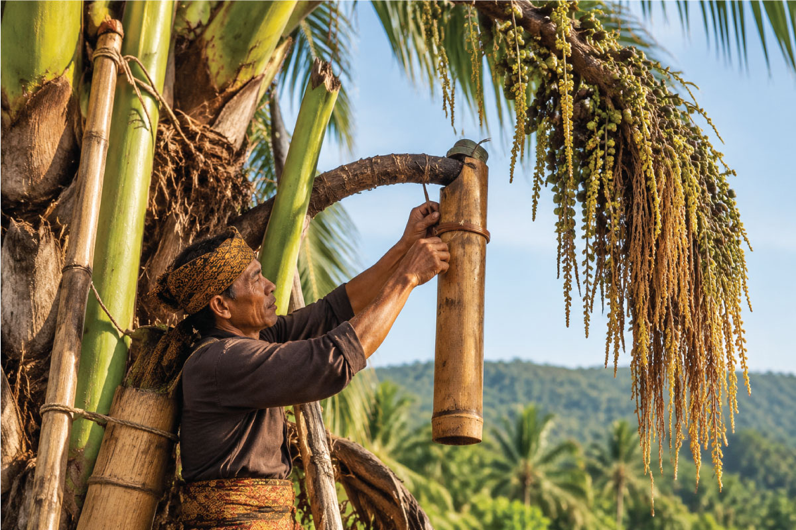

Pemanenan NiraPalm Nectar Harvesting
Nira aren dikumpulkan dari bunga aren pilihan melalui proses penyadapan yang terjaga.Palm nectar is collected from selected flowers through a carefully maintained harvesting process.
Baca selengkapnya →Read more →